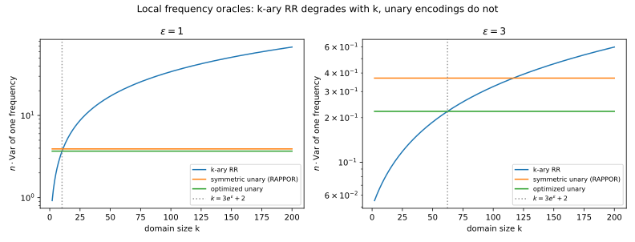
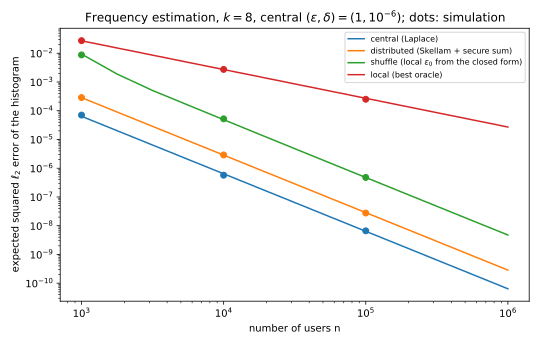

25 Local, shuffle and distributed trust models
25.1 Why this matters
Every mechanism so far in this part assumed a trusted curator that holds the raw data and releases only a mechanism’s output. The guarantee of differential privacy (DP) covers that output, not the curator’s database, its engineers or a court order. Often the curator is exactly the party users don’t want to see their data: a browser vendor collecting usage statistics, a keyboard app learning new words. So what can you trust instead, and what does it cost in accuracy?
The answer turns on where the noise enters. The four models of Figure 25.1 all release a noisy statistic; they differ in who sees the data before the noise is added. The further upstream it enters, the fewer parties you trust and the more noise reaches the answer. A report randomized on a person’s device must hide its owner from everyone, so it carries about as much noise as a curator adds once to the whole answer. Sum \(n\) such reports and their variances add: the noise grows like \(\sqrt n\) while the count grows like \(n\). The shuffle and distributed models move the noise back downstream without handing the data to anyone: anonymity hides which report is whose, and cryptography hides everything but the sum.

25.2 Central and local differential privacy
In the local model each person runs a local randomizer \(R\) on their own record and sends only the result. The receiver may know whose report it is, so the report must look about the same whatever the record: for any two records \(x, x'\) and any set \(S\) of reports, \[\Pr[R(x) \in S] \le e^{\varepsilon_0}\Pr[R(x') \in S]. \tag{25.1}\] Changing one record changes one report, so the collection is \(\varepsilon_0\)-DP against everyone, the collector included: a breach of its database reveals only reports, which are already private. The neighbours are replace neighbours, because the number of reports already shows who took part.
The basic local randomizer is randomized response: report your true bit with probability \(t = e^{\varepsilon_0}/(1 + e^{\varepsilon_0})\), the flipped bit otherwise (The definition of differential privacy). The lying pulls the mean report towards one half by a known amount, and undoing the pull estimates the fraction of ones without bias, with standard deviation \[\operatorname{sd}(\hat\pi) = \frac{e^{\varepsilon_0/2}}{(e^{\varepsilon_0} - 1)\sqrt n}. \tag{25.2}\] Of \(n = 10{,}000\) people, say 3,000 hold a 1, and each answers at \(\varepsilon_0 = \ln 3\). The estimate’s standard deviation is 0.00866, or 86.6 people on the count. A trusted curator adding Laplace noise of scale \(1/\varepsilon\) to the count has standard deviation 1.287: same people, same \(\varepsilon\), and the local survey is 67.3 times noisier.
That is the model’s fault, not randomized response’s. Squeezing every report into a probability band \(e^{\varepsilon_0}\) wide shrinks what it says about the population by a factor of order \((e^{\varepsilon_0} - 1)^2\), about \(\varepsilon_0^2\), so you need that many times more people to learn the same thing. No local protocol beats error of order \(1/((e^{\varepsilon_0} - 1)\sqrt n)\) on a fraction (Duchi, Jordan & Wainwright 2018), and randomized response is within a constant of it. A curator’s error is of order \(1/(n\varepsilon)\), so the ratio grows like \(\sqrt n\) (Figure 25.2). For a standard deviation of 0.001 at \(\varepsilon = 1\), randomized response needs 920,674 people and the central Laplace mechanism 1,415.

So local DP suits frequent items in very large populations, as in Google’s RAPPOR in Chrome and Apple’s telemetry. Since the guarantee is about a report’s content, a network address stored beside it still links it to the person. And \(\varepsilon_0\) is per report: a user who reports daily releases a new output about the same record each day, and by composition the losses add (Post-processing, group privacy and composition).
25.3 Frequency estimation
The workhorse of deployed local DP is frequency estimation: each person holds one of \(k\) values, and the analyst wants the fraction \(f_v\) holding each value \(v\). In every scheme in use, a frequency oracle, a report “supports” \(v\) with probability \(p\) if the person holds \(v\) and a smaller \(q\) otherwise. The share of supporting reports is then \(q + f_v(p - q)\) on average, so with \(C_v\) supporting reports, subtracting \(q\) and dividing by \(p - q\) gives an unbiased estimate, with exact variance \[\hat f_v = \frac{C_v/n - q}{p - q}, \qquad \operatorname{Var}\hat f_v = \frac{f_vp(1-p) + (1 - f_v)q(1-q)}{n(p - q)^2}. \tag{25.3}\] Design comes down to making the gap \(p - q\) large at a given \(\varepsilon_0\), since its square divides the variance.
\(k\)-ary randomized response reports the true value with probability \(p = e^{\varepsilon_0}/(e^{\varepsilon_0} + k - 1)\) and each other value with \(q = 1/(e^{\varepsilon_0} + k - 1)\). The ratio \(p/q\) is the allowed \(e^{\varepsilon_0}\), but both shrink as \(k\) grows: with many values the report is nearly uniform, and a rare value’s variance grows linearly in \(k\). Optimized unary encoding (Wang et al. 2017) sends a one-hot vector of \(k\) bits, each randomized. Changing a person’s value changes only two bits, whatever \(k\) is, so the variance doesn’t depend on \(k\); the price is a \(k\)-bit report. It keeps a true 1 with probability \(p = \frac12\) but invents a 1 with only \(q = 1/(e^{\varepsilon_0} + 1)\), because almost all bits are 0 and invented 1s are the noise that hurts most. Setting \(f_v \to 0\) in Equation 25.3 gives each scheme’s noise floor, \[k\text{-ary: } \frac{e^{\varepsilon_0} + k - 2}{n(e^{\varepsilon_0} - 1)^2}, \qquad \text{optimized unary: } \frac{4e^{\varepsilon_0}}{n(e^{\varepsilon_0} - 1)^2}, \tag{25.4}\] and \(k\)-ary randomized response wins exactly when \(k < 3e^{\varepsilon_0} + 2\) (Figure 25.3).

A keyboard app wants the frequency of \(k = 128\) emoji at \(\varepsilon_0 = 1\) from \(10^6\) users. A rare emoji’s standard deviation is 0.0066 under \(k\)-ary randomized response and 0.0019 under optimized unary encoding. An estimate must stand about three standard deviations above zero to be seen, so emoji used by fewer than about 0.6% of users are lost either way: these oracles are optimal local protocols, and the \(\sqrt n\) gap remains. For large \(k\), hashing schemes (local hashing, Hadamard response) reach the unary variance with reports of about \(\log k\) bits. And because of composition, RAPPOR (Erlingsson, Pihur & Korolova 2014) memoizes one permanent randomized response per value and adds fresh noise around it in each report, so averaging a user’s daily reports recovers at most the permanent randomized value, not the value itself.
25.4 The shuffle model
The local model loses \(\sqrt n\) because the analyst knows whose report is whose. In the shuffle model a shuffler strips identifiers and timing and forwards the reports in random order, so the analyst sees what was sent but not by whom. It is trusted only to unlink: it sees reports, which are already \(\varepsilon_0\)-DP.
Anonymity helps because of what Equation 25.1 says about everyone else. Another person’s report is at most \(e^{\varepsilon_0}\) times less likely than if they held the target’s value, so with probability about \(e^{-\varepsilon_0}\) each of them sends a report that looks exactly like one the target might have sent. The target hides among about \(ne^{-\varepsilon_0}\) such clones, and more people means more clones (Amplification by shuffling and by iteration). Theorem 3.1 of Feldman, McMillan & Talwar (2021) makes this a bound: shuffling \(n\) reports from \(\varepsilon_0\)-DP local randomizers is \((\varepsilon, \delta)\)-DP under replace neighbours with \[\varepsilon \le \ln\left(1 + \frac{e^{\varepsilon_0} - 1}{e^{\varepsilon_0} + 1}\left(\frac{8\sqrt{e^{\varepsilon_0}\ln(4/\delta)}}{\sqrt n} + \frac{8e^{\varepsilon_0}}{n}\right)\right), \tag{25.5}\] provided \(\varepsilon_0 \le \ln\big(n/(16\ln(2/\delta))\big)\). The bracket falls like \(1/\sqrt n\), the clones at work. The proviso, rewritten as \(ne^{-\varepsilon_0} \ge 16\ln(2/\delta)\), demands enough expected clones; below it the theorem says nothing.
The payoff is that each report can be randomized weakly. For central \(\varepsilon = 1\) at \(\delta = 10^{-6}\), bisection on Equation 25.5 (Section 25.7) allows \(\varepsilon_0 = 3.504\) at \(n = 10^4\), 5.701 at \(10^5\) and 7.992 at \(10^6\). At 7.992 a single report is almost the truth, yet the shuffled collection is \((1, 10^{-6})\)-DP. Because the allowed \(e^{\varepsilon_0}\) grows in proportion to \(n\), the error returns to the central rate up to a factor \(\sqrt{\ln(1/\delta)}\). At \(n = 10^3\) there are too few clones: the proviso caps \(\varepsilon_0\) at 1.460.

The closed form is loose (Figure 25.4). The same paper computes the clone comparison numerically, and that bound is still valid for every \(\varepsilon_0\)-DP randomizer: at \(n = 10^4\) and \(\varepsilon_0 = 1\) it gives 0.0530 where the closed form gives 0.2140. Reason with the closed form, deploy with a numerical accountant.
The amplification lasts only while the shuffler does its one job. If it colludes with the analyst, the guarantee falls back to the local \(\varepsilon_0\), which you just made large, so keep it reasonable. If the adversary controls \(m\) senders, it can remove their known reports, leaving \(n - m\) people to provide clones. And the theorem covers only the set of reports, so timing, message sizes and counts must not leak, which is why real shufflers batch and pad.
25.5 Distributed DP
The distributed model adds the central amount of noise once, in pieces. Independent Gaussians add up to a Gaussian whose variance is the sum of theirs, so if each of \(n\) clients adds \(\mathcal N(0, \sigma^2/n)\), the sum carries exactly the \(\mathcal N(0, \sigma^2)\) of the central Gaussian mechanism (The Laplace and Gaussian mechanisms). A secure aggregation protocol (Bonawitz et al. 2017), built on additive secret sharing (Cryptography basics), shows the server nothing it couldn’t compute from the sum, so its view is as private as the central mechanism’s output.
Each client can’t add the full \(\sigma^2\) to be safe: the sum would then carry \(n\sigma^2\), the local model again. The small shares make the accuracy central, and they are also the weakness, since no share is enough noise alone. If the adversary knows the noise of \(t\) clients, because they collude or dropped out, it subtracts their shares, leaving a Gaussian mechanism with noise \[\sigma\sqrt{\frac{n - t}{n}}. \tag{25.6}\] So over-provision: to tolerate a fraction \(\rho\) of such clients, each adds variance \(\sigma^2/(n(1 - \rho))\), and the honest ones alone still supply \(\sigma^2\).
A server aggregates a histogram through 100 clients at \((1, 10^{-6})\)-DP. Under replace a changed value moves two counts by 1, so the \(\ell_2\) sensitivity is \(\sqrt2\), and the exact calibration gives total noise \(\sigma = 5.975\), or 0.597 per client. If 20% of clients collude with the server, the delivered guarantee is \(\varepsilon = 1.128\); at 50%, 1.455; with only 10% honest, 3.525 (Figure 25.5). Nobody outside can see how many are honest, so decide the fraction up front.

Secret shares can be uniformly random only in a finite set, so secure aggregation works on integers modulo some \(q\), chosen large enough that the true sum never wraps around. Clients round their values and add integer noise whose sum still has a known distribution. Skellam noise, a difference of two Poisson variables, sums exactly to Skellam noise because Poissons add, and its privacy is close to a Gaussian’s (Agarwal, Kairouz & Liu 2021); discrete Gaussian shares sum approximately to a discrete Gaussian (Kairouz, Liu & Steinke 2021). Laplace noise doesn’t split: \(n\) shares of \(\mathrm{Lap}(b/n)\) sum to variance \(2b^2/n\), not \(2b^2\). And secure aggregation hides inputs without checking them: a malicious client can send a vector with no noise, and bounding that needs zero-knowledge proofs or verifiable aggregation.
25.6 Comparing the four models
To choose, fix the central guarantee and compare errors. The full edition’s script estimates an 8-value histogram at \((1, 10^{-6})\) in all four models, each with its best mechanism from this chapter (Table 25.1, Figure 25.6).
| \(n\) | Central | Distributed | Shuffle | Local |
|---|---|---|---|---|
| \(10^3\) | \(6.40\times10^{-5}\) | \(2.86\times10^{-4}\) | \(9.35\times10^{-3}\) | \(2.71\times10^{-2}\) |
| \(10^4\) | \(6.40\times10^{-7}\) | \(2.86\times10^{-6}\) | \(4.88\times10^{-5}\) | \(2.71\times10^{-3}\) |
| \(10^5\) | \(6.40\times10^{-9}\) | \(2.86\times10^{-8}\) | \(4.76\times10^{-7}\) | \(2.71\times10^{-4}\) |

Central and distributed squared errors fall like \(1/n^2\), because their noise is fixed while counts grow; local error falls like \(1/n\), so at \(n = 10^5\) it is about 42,000 times the central one. Shuffle moves towards central as the allowed \(\varepsilon_0\) grows with \(n\): at \(n = 10^4\) it is about 56 times better than local. Distributed is about 4.5 times the central Laplace error, because a Gaussian pays for its \(\delta\) with a wider spread; it gains only in high dimension, where its \(\ell_2\) calibration beats Laplace’s \(\ell_1\).
Every column has the same \((\varepsilon, \delta)\) against a different adversary: only the local model protects against the collector. A report of “\(\varepsilon = 1\)” without its trust model can’t be compared with anything.
25.7 Code
Two calculations recur in local and shuffled deployments: which frequency oracle to use, and how large a local \(\varepsilon_0\) the shuffler allows.
from math import exp, log, log1p, sqrt
def rare_variance_krr(eps0: float, k: int) -> float:
"""n times the variance of a rare value's frequency under k-ary randomized response."""
return (exp(eps0) + k - 2) / (exp(eps0) - 1) ** 2
def rare_variance_oue(eps0: float) -> float:
"""n times the variance of a rare value's frequency under optimized unary encoding."""
return 4 * exp(eps0) / (exp(eps0) - 1) ** 2
def shuffle_cap(n: int, delta: float) -> float:
"""The largest eps0 the shuffling theorem covers: ln(n / (16 ln(2/delta)))."""
return log(n / (16 * log(2 / delta)))
def shuffle_epsilon(eps0: float, n: int, delta: float) -> float:
"""Central epsilon after shuffling n eps0-DP reports (Feldman, McMillan & Talwar 2021)."""
if eps0 > shuffle_cap(n, delta):
raise ValueError("eps0 is above the theorem's cap")
e0 = exp(eps0)
bracket = 8 * sqrt(e0 * log(4 / delta)) / sqrt(n) + 8 * e0 / n
return log1p((e0 - 1) / (e0 + 1) * bracket)
def max_local_epsilon(eps: float, n: int, delta: float) -> float:
"""The largest eps0 whose shuffled reports are (eps, delta)-DP by the closed form."""
lo, hi = 0.0, shuffle_cap(n, delta)
if shuffle_epsilon(hi, n, delta) <= eps:
return hi
for _ in range(100):
mid = (lo + hi) / 2
lo, hi = (mid, hi) if shuffle_epsilon(mid, n, delta) <= eps else (lo, mid)
return lo
print(f"{rare_variance_krr(1.0, 128):.3f} {rare_variance_oue(1.0):.3f}") # 43.596 3.683
print(f"{shuffle_epsilon(1.0, 10_000, 1e-6):.4f}") # 0.2140
print(" ".join(f"{max_local_epsilon(1.0, n, 1e-6):.3f}" for n in (10**3, 10**4, 10**5, 10**6))) # 1.460 3.504 5.701 7.992The full edition’s script, trust_models.py, computes every number in this chapter, including the numerical shuffle bound:
uv run python code/part03-dp-foundations/trust_models.py25.8 Cheat sheet
| Result | Formula | Notes |
|---|---|---|
| Local randomizer | \(\Pr[R(x) \in S] \le e^{\varepsilon_0}\Pr[R(x') \in S]\) for all \(x, x'\) | Private against everyone, the collector included; replace neighbours |
| Randomized response | \(\operatorname{sd} = e^{\varepsilon_0/2}/((e^{\varepsilon_0} - 1)\sqrt n)\) | Optimal among local protocols up to a constant |
| Local versus central | Local error of order \(1/((e^{\varepsilon_0} - 1)\sqrt n)\); central \(\sqrt2/(n\varepsilon)\) | The gap grows like \(\sqrt n\) |
| Frequency oracle | \(\hat f_v = (C_v/n - q)/(p - q)\), variance Equation 25.3 | Unbiased, exact variance |
| \(k\)-ary randomized response | Rare variance \((e^{\varepsilon_0} + k - 2)/(n(e^{\varepsilon_0} - 1)^2)\) | Best for \(k < 3e^{\varepsilon_0} + 2\) |
| Optimized unary encoding | Rare variance \(4e^{\varepsilon_0}/(n(e^{\varepsilon_0} - 1)^2)\) | Independent of \(k\); \(k\)-bit reports |
| Shuffling | Equation 25.5, for \(\varepsilon_0 \le \ln(n/(16\ln(2/\delta)))\) | Loose; deploy with a numerical bound |
| Distributed Gaussian | \(n\) shares \(\mathcal N(0, \sigma^2/n)\) sum to \(\mathcal N(0, \sigma^2)\) | \(t\) colluders leave \(\sigma\sqrt{(n - t)/n}\) |
Rules of thumb
- Local DP costs a factor of about \(\sqrt n\) in error over central DP; no local protocol avoids it.
- A shuffler lets each report use a large \(\varepsilon_0\); compute the central \(\varepsilon\) numerically before deploying.
- State the trust model next to \((\varepsilon, \delta)\).
25.9 Further reading
- Wang, Blocki, Li & Jha, “Locally Differentially Private Protocols for Frequency Estimation” (USENIX Security 2017): frequency oracles, optimized unary encoding and local hashing, compared.
- Feldman, McMillan & Talwar, “Hiding Among the Clones” (FOCS 2021): the closed form used here and the numerical bound to deploy with.
- Kairouz, Liu & Steinke, “The Distributed Discrete Gaussian Mechanism for Federated Learning with Secure Aggregation” (ICML 2021): distributed noise end to end, with integer noise and modular arithmetic.
Derivations. Every result in this chapter is derived step by step in the full edition’s chapter.